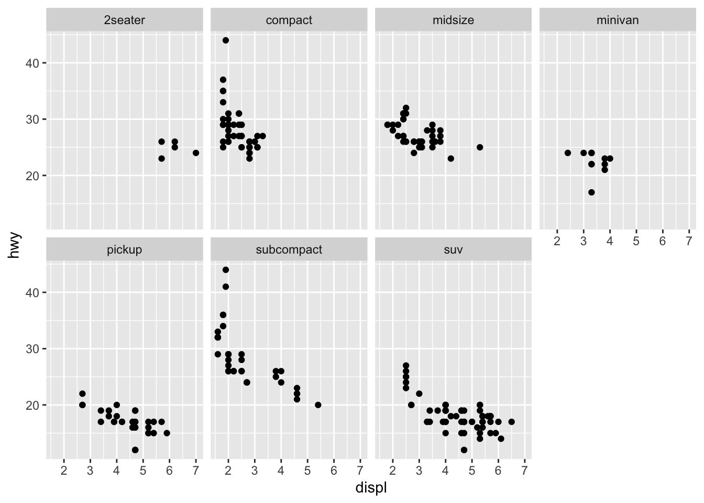

Data Exploration & Visualization
The art of looking at data
Efficient data visualization is key in data science. Not only will it help you to understand your own data, but also is it a primary mean to communicate results to others and make complex results easiert to understand.
Last but not least, litte is more satisfying then to come up with really cool visualisations of your research.
In this course we will focus on visualizing data with a R-package called ‘ggplot2’. It is part of the tidyverse and once you overcome the initial barrier it is very easy to handle and incredible versatile.
Before creating the first plots, we need a first idea of the struture and content of the dataset we are interested in. For this, R provides some nice functions.
To get started we use a dataset that is already included in R called mpg.
Data Exploration
Example Dataset ‘mpg’: fuel economy data of cars
how does the data look like? We could open it in Excel..
The mpg dataset (I)
For provided datasets we can use the R help to get more info
?(mpg)Look at the first 6 lines of the dataset
head(mpg)# A tibble: 6 × 11
manufacturer model displ year cyl trans drv cty hwy fl class
<chr> <chr> <dbl> <int> <int> <chr> <chr> <int> <int> <chr> <chr>
1 audi a4 1.8 1999 4 auto(l5) f 18 29 p compa…
2 audi a4 1.8 1999 4 manual(m5) f 21 29 p compa…
3 audi a4 2 2008 4 manual(m6) f 20 31 p compa…
4 audi a4 2 2008 4 auto(av) f 21 30 p compa…
5 audi a4 2.8 1999 6 auto(l5) f 16 26 p compa…
6 audi a4 2.8 1999 6 manual(m5) f 18 26 p compa…displ: engine displacement in litres
hwy: highway efficiency (miles per gallon)
The mpg dataset (II)
More info about the structure of the datset
str(mpg)tibble [234 × 11] (S3: tbl_df/tbl/data.frame)
$ manufacturer: chr [1:234] "audi" "audi" "audi" "audi" ...
$ model : chr [1:234] "a4" "a4" "a4" "a4" ...
$ displ : num [1:234] 1.8 1.8 2 2 2.8 2.8 3.1 1.8 1.8 2 ...
$ year : int [1:234] 1999 1999 2008 2008 1999 1999 2008 1999 1999 2008 ...
$ cyl : int [1:234] 4 4 4 4 6 6 6 4 4 4 ...
$ trans : chr [1:234] "auto(l5)" "manual(m5)" "manual(m6)" "auto(av)" ...
$ drv : chr [1:234] "f" "f" "f" "f" ...
$ cty : int [1:234] 18 21 20 21 16 18 18 18 16 20 ...
$ hwy : int [1:234] 29 29 31 30 26 26 27 26 25 28 ...
$ fl : chr [1:234] "p" "p" "p" "p" ...
$ class : chr [1:234] "compact" "compact" "compact" "compact" ...The mpg dataset (III)
Additional functions, check it out by yourself!
summary(mpg)glimpse(mpg)view(mpg)dim(mpg)Data Visualization
Different options to create plots in R
- base R: ok, but sometimes well annoying
- plotly
- ggplot2: versatile. elegant. consistent. fun. wohooo!
Data Visualization in ggplot2: Examples

ggplot2
From the ggplot2 manual
ggplot2 is a system for declaratively creating graphics, based on The Grammar of Graphics. You provide the data, tell ggplot2 how to map variables to aesthetics, what graphical primitives to use, and it takes care of the details.
Lets go step-by-step through creating a figure.
(1) The canvas
mpg %>%
ggplot()
(2) Add Axes
We want to plot hwy ~ displ
displ: engine volume hwy: fuel efficiency (miles per gallon)
mpg %>%
ggplot(aes(x = displ, y = hwy))
(3) Add Data
-> adding layers
mpg %>%
ggplot(aes(x = displ, y = hwy)) +
geom_point()
(4) Use Colors
mpg %>%
ggplot(aes(x = displ, y = hwy, color = manufacturer)) +
geom_point()
(5) Add Labels
mpg %>%
ggplot(aes(x = displ, y = hwy, color = manufacturer)) +
geom_point() +
labs(title = "Large displacement lowers fuel efficiency",
x = "Displacement", y = "Efficiency",
caption = "mgp data")(6) Save output
p <- mpg %>%
ggplot(aes(x = displ, y = hwy, color = manufacturer)) +
geom_point()
ggsave("displ_vs_hwy.png", plot = p)
- free choice of data format (.pdf, .png)
- numerous options to change size, scaling etc., see ?ggsave
- saves directly into working directory, unless specified differently (e.g. in subfolder)
Time to try it yourself
–> check out Exercise Part 1.
ggplot: General template
The general template for a ggplot call is the following:
ggplot(data = <DATA>) +
<GEOM_FUNCTION>(aes(<MAPPINGS>))To make a graph, we replace the bracketed sections with
- a dataset
- a geom function
- a collection of mappings/aestethics
mappings/aestethics: colors & shapes & linetypes
- color
- fill
- shape
- linetype
- size
- alpha
Colors & shape: Example
ggplot(data = mpg) +
geom_point(aes(x = displ, y = hwy,
color = drv))
ggplot(data = mpg) +
geom_point(aes(x = displ, y = hwy,
shape = drv))

Automatic vs. manual setting of mappings
ggplot(data = mpg) +
geom_point(aes(x = displ, y = hwy,
color = drv))
ggplot(data = mpg) +
geom_point(aes(x = displ, y = hwy),
color = "red")

geoms
geom_point(), geom_line(), geom_smooth(), … and tons of others!
ggplot(data = mpg) +
geom_point(aes(x = displ, y = hwy))
ggplot(data = mpg) +
geom_smooth(aes(x = displ, y = hwy))

Combine it!
ggplot(data = mpg) +
geom_point(aes(x = displ, y = hwy, color = drv)) +
geom_smooth(aes(x = displ, y = hwy))`geom_smooth()` using method = 'loess' and formula 'y ~ x'
Avoid Code Duplication
ggplot(data = mpg) +
geom_point(aes(x = displ, y = hwy)) +
geom_smooth(aes(x = displ, y = hwy))ggplot(data = mpg,
aes(x = displ, y = hwy)) +
geom_point() +
geom_smooth()Note the difference!
# V1
ggplot(data = mpg) +
geom_point(aes(x = displ, y = hwy,
color = drv)) +
geom_smooth(aes(x = displ, y = hwy))
# V2
ggplot(data = mpg,
aes(x = displ, y = hwy, color = drv)) +
geom_point() +
geom_smooth()

How can we fix it?
Solution: Individual aes() for different geoms
# V1
ggplot(data = mpg,
aes(x = displ, y = hwy, color = drv)) +
geom_point() +
geom_smooth()
# V2
ggplot(data = mpg,
aes(x = displ, y = hwy)) +
geom_point(aes(color = drv)) +
geom_smooth()
Individual aes() for different geoms
Different ways to achieve the same.
# V1
ggplot(data = mpg,
aes(x = displ, y = hwy)) +
geom_point(aes(color = drv)) +
geom_smooth()
# V2
ggplot(data = mpg,
aes(x = displ, y = hwy, color = drv)) +
geom_point() +
geom_smooth(aes(group = 1))
Discrete vs. continuous variables
head(mpg)# A tibble: 6 × 11
manufacturer model displ year cyl trans drv cty hwy fl class
<chr> <chr> <dbl> <int> <int> <chr> <chr> <int> <int> <chr> <chr>
1 audi a4 1.8 1999 4 auto(l5) f 18 29 p compa…
2 audi a4 1.8 1999 4 manual(m5) f 21 29 p compa…
3 audi a4 2 2008 4 manual(m6) f 20 31 p compa…
4 audi a4 2 2008 4 auto(av) f 21 30 p compa…
5 audi a4 2.8 1999 6 auto(l5) f 16 26 p compa…
6 audi a4 2.8 1999 6 manual(m5) f 18 26 p compa…Discrete vs. continuous variables
# V1
ggplot(data = mpg,
aes(x = displ, y = hwy)) +
geom_point(aes(color = drv))
# V2
ggplot(data = mpg,
aes(x = displ, y = hwy, color = cty)) +
geom_point() 
Geoms with statistical transformation
- geom_smooth
- geom_bar
- geom_boxplot
- geom_density
- geom_violine
Example: geom_bar
ggplot(data = mpg) +
geom_bar(aes(x = class))
Count does not show up in the original data!
-> calculated by algorithm, the so-called stat
Example: geom_bar

Different geom have different default stat.
check ?geom_bar for details to each geom.
Source: (R4DS)[https://r4ds.had.co.nz/]
Example: geom_bar
- We can override the default stat.
- Example: proportion instead of absolute count
- look up the ‘computed variables’ in the help section
ggplot(data = mpg) +
geom_bar(aes(x = class, y = ..prop.., group = 1))
Boxplots & Violin-Plots
# V1
ggplot(data = mpg) +
geom_boxplot(aes(x = class, y = hwy,
fill = class))
# V2
ggplot(data = mpg) +
geom_violin(aes(x = class, y = hwy,
fill = class))Visualize distributions
ggplot(data = mpg) +
geom_density(aes(x = hwy, fill = drv), alpha = 0.5)Facets
Facets are a convenient way to split a figure into multiple subpanels.
facet_wrap
ggplot(data = mpg) +
geom_point(mapping = aes(x = displ, y = hwy)) +
facet_wrap(~ class, nrow = 2)
facets
facet_grid: Split into columns and rows.
ggplot(data = mpg) +
geom_point(mapping = aes(x = displ, y = hwy)) +
facet_grid(drv ~ cyl)
Variables for facet_wrap and facet_grid should be discrete!
Unhappy how it looks?
Many ways to customize your figures
- change general appearance: themes
- change color, linetypes, shapes, etc.: scales
- adjust axis labels, …
- …
Get inspired in the R-graph gallery
Urgent Help: The ggplot cheatsheet

Useful Resources
Hands on
- http://www.cookbook-r.com/Graphs/
- https://ggplot2.tidyverse.org/
- Stackoverflow
- Twitter: #rstats
- https://www.springer.com/de/book/9783319242750: great book, but not for free :(
Theory
H. Wickham (2010): A layered grammar of graphics. Journal of Computational and Graphical Statistics, 19(1), pp 3-28.
https://vita.had.co.nz/papers/layered-grammar.html
Claus Wilke: Fundamentals of Data Visualization
https://clauswilke.com/dataviz/
Exercise Part 2
Check out the second part of the exercise to get some more practice.